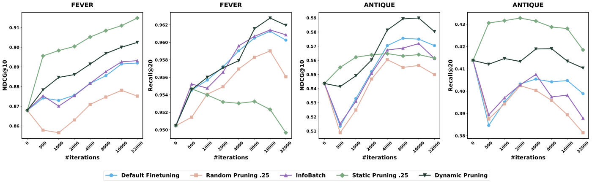

Contents · 10 sections
1What problem is it actually solving?2The big picture first3Static pruning: ranking goes up, recall goes down4Dynamic pruning: two-level sampling with probabilities that change over training5Experiments: small average gains, but neither metric drops6Ablations: every part helps, none is enough alone7With noisy labels: static first, then dynamic8The limitations as I see them9How a retrieval or recall team could try this10One-line conclusion and assessmentSHARE
This is worth reading for teams fine-tuning dense retrievers or embedding models on domain data. Its value is not the size of the gain but a clear explanation of an easy trap: if you delete "weak" training pairs by similarity, ranking metrics rise but recall drops, and the cause is the two-level "sample a query, then sample a document" structure of retrieval training. The core idea in one sentence: delete nothing and only adjust sampling probabilities, at both the query and the document level, so high-scoring examples are drawn more often and low-scoring ones less often but never zero, with the preference for high scorers growing later in training. On bge-large-en-v1.5 across 8 datasets, dynamic pruning (DP) raises average NDCG@10 from standard fine-tuning's 0.535 to 0.545 and average Recall@20 from 0.530 to 0.534; on FEVER (a fact-verification dataset) it matches standard fine-tuning in less than half the iterations. I think the gains are small and there is no variance across random seeds, so it is better treated as a cheap change you can drop into a sampler than as a source of big improvements.
What problem is it actually solving?
Fine-tuning a dense retriever usually samples like this: draw a query uniformly from all queries, randomly draw one of its positive documents, pair it with a negative from hard negative mining (picking documents that rank high in retrieval results but are not relevant), and compute a contrastive loss. There are two levels here: the query level and the document level.
An obvious idea is data pruning: use the pretrained model to compute cosine similarity for every "query–positive document" pair and keep only the most similar portion. The problem appears at the query level. An illustrative example:
| query | Similarity of its positive pairs (illustrative) | After keeping the top half |
|---|---|---|
| A | 0.9, 0.85, 0.8, 0.75 | All 4 pairs kept |
| B | 0.6, 0.5, 0.45 | All removed |
| C | 0.4 | All removed |
Keeping 4 of 8 pairs makes queries B and C disappear entirely. After pruning, the paper's sampling formula becomes: a query's probability equals its number of remaining positive pairs divided by the total number of remaining pairs, which is equivalent to sampling uniformly among the remaining pairs. So queries with more remaining pairs are drawn more often, and here A goes from one third to one hundred percent. The model only sees "well-matched" queries and ranks more precisely, but fails to recall queries like B and C that are hard to match. The paper calls this the quality–coverage tradeoff and stresses that it comes from retrieval's two-level sampling; per-sample pruning in classification tasks has no such problem.
The two metrics: NDCG@10 measures how well the top 10 results are ordered, higher when relevant items rank earlier; Recall@20 measures what share of all relevant documents make it into the top 20, a measure of coverage.
The big picture first
![Paper Figure 1: sampling probability of each training pair under three training schemes. The x-axis is training pairs ordered from low to high initial similarity. Left: standard fine-tuning (FT) treats all pairs equally; static pruning (SP) removes low-similarity pairs outright and raises the probability of the rest. Middle: at the start of DP training all pairs are kept, with higher probability for high-similarity pairs. Right: during training DP redistributes weights, and some pairs that started with low similarity turn out to be useful and gain probability.](../../../figs/2026-08-03/retrieval/2603.17205/fig1_sampling.png)
| Method | Score source | When scored | Low-scoring examples |
|---|---|---|---|
| Standard fine-tuning (FT) | No scoring | — | Sampled as usual |
| Static pruning (SP) | Cosine similarity from the pretrained model | Once, before training | Deleted |
| Dynamic pruning (DP) | Scores computed for free from the current model's forward pass | Updated continually during training | Sampled less, never zero |
The paper first runs SP, confirming the tradeoff above, then proposes DP to resolve it.
Static pruning: ranking goes up, recall goes down
SP is simple: score all positive pairs with the pretrained model's cosine similarity and keep the top k fraction, by default k=0.25, i.e. three quarters are deleted. When all of a query's positive pairs are deleted, that query no longer appears.
The results match the analysis above. SP gets the best NDCG@10 on NFCorpus, TriviaQA and FEVER (0.491, 0.501 and 0.915 respectively) and averages 0.537 across 8 datasets, slightly above FT's 0.535; but average Recall@20 drops from FT's 0.530 to 0.512, and on HotpotQA from 0.836 to 0.781. This shows that deleting data really does make the model better at ranking, at the cost of narrower coverage.
Varying k on NFCorpus makes the point more sharply: even keeping only 5% of the data, NDCG@10 is still 0.482, above FT's 0.466, while Recall@20 falls steadily as k shrinks. A small amount of high-similarity data is enough to teach ranking, but recall needs exposure to a diverse enough set of queries.
The paper also tried another scoring method, CBS (consistency-based scoring): the pretrained model ranks each positive document by similarity together with 10,000 random documents (taken from other queries' positives), the reciprocal of the positive's rank is the score, so a higher rank means a higher score, and pairs are then kept by percentage. It performs close to cosine similarity: averaged over 4 datasets, NDCG@10 is 0.612 versus 0.620 and Recall@20 is 0.576 versus 0.566, each winning one. But CBS needs to re-encode the negatives after every model update, so it cannot be used for DP's continual in-training scoring, and cosine similarity was adopted throughout.
Dynamic pruning: two-level sampling with probabilities that change over training
DP deletes no data and only changes the sampling probabilities at both levels. Scoring needs no extra forward pass: each training step already computes the query and positive embeddings, so two scores come for free. One is the positive score, the cosine similarity between the query and the positive document; the other is the query score, the mean contrastive loss over all of that query's positive pairs, plus an offset to keep it positive. As I read it, each positive pair's score is kept in a table and refreshed with the current step's result whenever that pair is drawn into a batch, while undrawn pairs keep their previous values; every few steps the pairs of each query are pooled from the table into a query score and the thresholds are recomputed. The overhead the paper mentions is exactly this pooling and quantile computation, so no extra forward pass is needed.
At the document level, all positive scores are sorted from high to low, and the score at the top-v fraction becomes the threshold T. Documents above the threshold get weight β, the rest weight 1, and documents are drawn by the normalized weights. The paper uses β=5, with v loosening from 0.25 to 0.5 over training. An illustrative hand calculation: a query has 4 positives and only 1 is above the threshold, so the weights are 5, 1, 1, 1; that document is drawn with probability 5/8 and each of the other three with 1/8. Weak documents are drawn less often, but none is ever fully excluded.
The query level is a bit more involved. It maintains a virtual pool of fixed size n₀: the queries in the top r fraction by query score always enter the pool, and the remaining slots are filled at random from the other queries. r is chosen so that the ratio of "the probability a top query enters the pool" to "the probability any other query enters" equals the sampling strength α exactly.
Here is a hand calculation with illustrative data. Take n=100 queries, the paper's initial cutoff ratio r_s=0.25 and initial strength α_s=2, so n₀=⌊100×0.75÷2+25⌋=62. At the start of training α=2 and r=(2×62−100)÷(1×100)=0.24: the top 24 queries always enter the pool, and the remaining 38 slots are drawn from 76 queries, each entering with probability 0.5, a ratio of exactly 2. At the end of training α=5 and r=(5×62−100)÷(4×100)=0.525: the top ~52 always enter, and the remaining ~9.5 slots are drawn from ~47.5, probability 0.2, a ratio of 5. The pool size stays at 62 throughout, so the number of steps per epoch does not change and DP fits directly into training frameworks that require a fixed dataset size. Hoot says

The two ends in the text: α=2 → α=5
- r (top share)
- 0.24 → 0.525
- Sure entries (top)
- 24 → ≈52.5
- Slots left ÷ other queries
- 38 ÷ 76 → 9.5 ÷ 47.5
- Others' chance
- 0.5 → 0.2
Where the probability comes from: the top 24 always get in (probability 1); the remaining 38 slots are drawn uniformly among the 76 other queries, 38 ÷ 76 = 0.5 each. r is solved from "top probability ÷ other probability = α", so 1 ÷ 0.5 = 2 and 1 ÷ 0.2 = 5 are exactly α.
The midpoint: halfway, α=3.5
- r=(3.5×62−100)÷250
- 0.468
- Sure entries (top)
- ≈46.8
- Slots left ÷ other queries
- 15.2 ÷ 53.2
- Others' chance
- ≈0.286
1 ÷ 0.286 ≈ 3.5. Always 62 slots, so steps per epoch never change.
n=100 queries, n₀=62, illustrative; the right column (halfway, α=3.5) uses the same formula and is not in the text. Fractional counts such as 46.8 and 52.5 are a continuous approximation; after rounding, the probability ratio is only approximately α. Source: paper §3: n₀=⌊n(1−r_s)/α_s + r_s·n⌋, r=(α·n₀−n)/((α−1)·n); r_s=0.25, α from 2 to 5 (cosine)
The sampling strength changes over training: α follows a cosine curve from 2 to 5 and is 3.5 halfway through. The intuition: early on, the model's scores are not yet trustworthy and aggressive selection would only amplify noise, so sampling starts out fairly uniform; as the model improves and its scores become more reliable, sampling gradually favors high scorers. This runs exactly opposite to curriculum learning, which starts easy and gradually broadens; DP starts broad and then tightens.
To save cost, query scores need not be recomputed every step; they are updated every I_u steps. On FiQA, updating every step slows training by 4.49%, every 10 steps by 2.51%, and every 100 steps by only 1.64%. On the larger FEVER (140 thousand positive pairs), per-step updates cost 17.4%, falling to 2.82% when updating every 10 steps. The overhead grows on larger data because pooling and quantiles scale with the number of pairs, so in practice I_u around 10 is enough.

Experiments: small average gains, but neither metric drops
The main experiments use bge-large-en-v1.5 (335 million parameters) on 8 English datasets covering nutrition, medicine, finance, non-factoid QA, factoid QA and fact verification. All hyperparameters are tuned for the best FT result and reused unchanged by every other method. InfoBatch, one of the baselines, is a general dynamic pruning method: it randomly skips samples whose loss is below average and scales up the gradients of the remaining samples to compensate.
| Method | Avg NDCG@10 | Avg Recall@20 | NDCG avg rank | Recall avg rank |
|---|---|---|---|---|
| Pretrained model | 0.507 | 0.495 | 4.75 | 4.38 |
| FT | 0.535 | 0.530 | 3.38 | 2.75 |
| InfoBatch | 0.535 | 0.530 | 2.88 | 2.38 |
| SP | 0.537 | 0.512 | 2.63 | 3.88 |
| DP | 0.545 | 0.534 | 1.38 | 1.63 |
DP has the best NDCG@10 on 6 of 8 datasets and the best Recall@20 on 5. This shows it really does gain on ranking without losing recall. But mind the size: average NDCG@10 is up 0.010 and average Recall@20 only 0.004. InfoBatch has exactly the same averages as FT, showing that general per-sample pruning does not help here.
On training efficiency, FT and InfoBatch need 16,000 steps on FEVER to reach their best NDCG@10; DP matches that in under 8,000 steps, and SP reaches that level in under 500. Counting DP's 2.82% per-step overhead, total training time drops by about 49%.
With Qwen3-Embedding-0.6B (an embedding model built on a large language model), only 3 datasets and 2,000 steps were run. SP has the best average NDCG@10 (0.507), DP 0.501 and FT 0.488; DP has the best average Recall@20 (0.375), FT 0.372, while SP drops to 0.361. This shows the same tradeoff pattern as on BGE; DP's edge shrinks with few steps because it needs time to adjust its sampling.
Ablations: every part helps, none is enough alone
| Variant (FEVER) | NDCG@10 | Recall@20 |
|---|---|---|
| FT | 0.892 | 0.960 |
| SP (none of the three parts) | 0.915 | 0.950 |
| DP with a hard cutoff | 0.908 | 0.957 |
| DP with fixed strength (α=4, β=5, v=0.25) | 0.900 | 0.952 |
| Full DP | 0.902 | 0.962 |
This table shows that turning "sample less" into "do not sample" raises NDCG but pushes recall below FT, and replacing the cosine schedule with fixed strength also pushes recall below FT. Only full DP beats FT on both metrics. Splitting the two levels on FiQA gives the same conclusion: query level only gives NDCG@10 of 0.517, document level only 0.516, both levels 0.524, against FT's 0.514.
The schedule-direction experiment is interesting too. On NFCorpus, reversing α to go from 5 down to 2 (the curriculum-learning direction) gives NDCG@10 of 0.476 and Recall@20 of 0.310; the default direction gives 0.480 and 0.304, and FT 0.466 and 0.300. Both directions beat FT, which shows the direction is not the key point; it becomes a knob for trading ranking against recall.
Results by difficulty answer the question "do the gains come only from easy queries?". FiQA's 648 test queries are split by the pretrained model's similarity into hard, medium and easy groups of 216 each. NDCG@10 on the hard group: FT 0.209, SP 0.203, DP 0.212. This shows SP regresses on hard queries and DP does not.
With noisy labels: static first, then dynamic
ANTIQUE labels have 4 levels; level 2 means "does not answer the question" and makes up 23.1% of the training data. The paper deliberately trains with level 2 as positives while still treating only levels 3 and 4 as relevant at test time, so roughly 1 in 4 training positives is wrong, simulating noisy labels.
| Method | NDCG@10 | Recall@20 |
|---|---|---|
| Pretrained model | 0.543 | 0.414 |
| FT | 0.570 | 0.395 |
| SP (k=0.25) | 0.560 | 0.430 |
| DP | 0.587 | 0.411 |
| SP (k=0.75) followed by DP | 0.582 | 0.422 |
FT's Recall@20 is even lower than the un-fine-tuned pretrained model's, showing that wrong positives hurt recall more than ranking. SP deletes low-similarity pairs, which removes most of the noise, and gets the best recall; DP ranks best. Using SP to delete the lowest 25% and then running DP on the remainder beats both FT and the pretrained model on both metrics. The paper's theoretical analysis gives the same advice: when the scoring signal is reliable, hard deletion is cleaner; when it is unreliable, soft adjustment is safer; so remove obvious noise with SP first, then fine-tune the sampling with DP.
The limitations as I see them
First, the gains are of the same order as the noise. Average Recall@20 is only 0.004 above FT, and the paper did not run multiple random seeds. On FiQA, DP's Recall@20 ranges from 0.635 to 0.646 across different update intervals; that 0.011 swing is larger than the average gain, so wins and losses on any single dataset should be read with caution.
Second, DP's own hyperparameters were never tuned, so its sensitivity is unclear. The fixed-strength ablation shows that with the wrong strength, recall falls below FT (0.952 versus 0.960), so on new data α, β and v will likely need to be re-tried.
Third, scale and scope are limited. The main model has only 335 million parameters; Qwen3-Embedding was tried only at 0.6B, on 3 datasets for 2,000 steps, and there SP beat DP on NDCG. All datasets are English text retrieval; larger models, multilingual data and two-tower retrieval in recommendation all remain to be verified yourself.
How a retrieval or recall team could try this
- First compute the pretrained model's cosine similarity for every positive pair and see how many queries would vanish entirely under k=0.25 pruning. If many vanish, SP will clearly hurt recall on your data.
- If your labels contain known noise, first try SP (k around 0.75) to delete the lowest slice, and check whether recall recovers relative to FT.
- Add DP to the sampler: at the document level use β=5 with v loosening from 0.25 to 0.5, at the query level use a cosine schedule for α from 2 to 5, and update scores every 10 steps. These are the paper's defaults, so they can be used as-is to start; the change lives only in the sampler and does not touch the loss.
- When evaluating, look at NDCG and Recall together, run at least 3 random seeds, and check by query difficulty whether hard queries regress.
One-line conclusion and assessment
The thing most worth taking away: data pruning for retrieval fine-tuning has to be thought of at two levels, query and document; deleting data narrows query coverage, while lowering probabilities does not.
| Dimension | Assessment |
|---|---|
| Problem importance | Medium-high. Domain fine-tuning is a routine step in deploying retrievers, and uneven data quality is common |
| Method novelty | Medium. Soft sampling and dynamic scoring have precedents; the novelty is designing around the two-level sampling structure and scheduling strength from broad to strict |
| Experimental evidence | Medium. 8 datasets, 3 models and full ablations, but small gains and no multi-seed variance |
| Engineering cost | Low. Only the sampler changes, scores come from existing forward passes, and the overhead is about 2% to 3% |
| Worth trying? | Yes, especially with noisy labels or a tight training budget |
| Where it fits | Domain fine-tuning of dense retrievers, embedding models and two-tower recall |
How did this read for you?
Hoot made a note. Thanks for the feedback.
One tap, no sign-in; tap again to undo. Only anonymous counts are kept, never who you are.
Discussion
Add experiment details, reproduction notes or a different take. Requires a GitHub sign-in.
Loading the discussion…